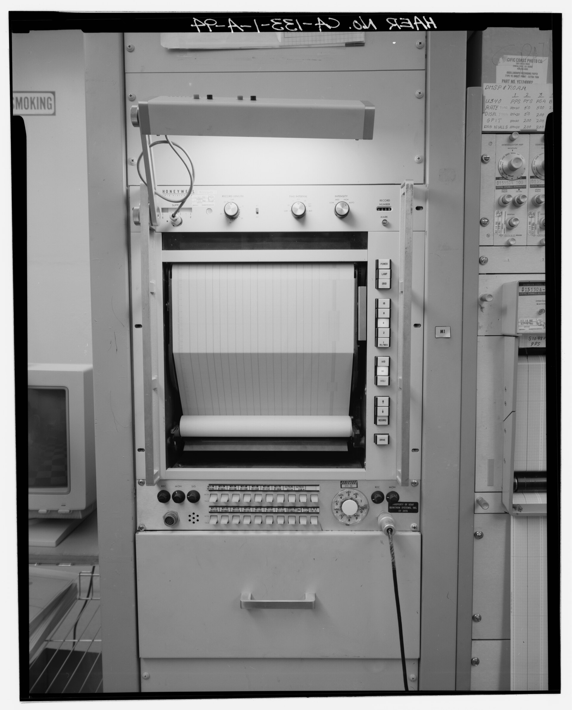

Honeywell Visicorder (Fiber-Optic CRT Optical Recorder)
An oscillograph where the picture tube itself is the pen — a CRT whose fiber-optic faceplate writes directly onto moving photosensitive paper

Overview
The Honeywell Visicorder was a family of optical chart recorders used through the 1970s and 1980s in high-bandwidth telemetry — the models documented here served the launch-operations building at Vandenberg Air Force Base's Space Launch Complex 3. Among the family, the fiber-optic CRT recorder is the genuinely extraordinary variant: a stationary cathode-ray tube whose faceplate is a fiber-optic window in physical contact with the moving chart paper.
In these instruments the signal beam writes directly through the fiber-optic window onto photosensitive paper that slides past in contact with the tube face. There is no stylus, no pen, no galvanometer mirror, no ink — the CRT itself is the writing element. The operator loads light-sensitive paper in a darkroom magazine, threads it around the drum or platen against the tube face, chooses a chart-drive speed (up to roughly 3,000 mm/s on the fastest machines), and selects paper length. The output is a "wet trace" that develops out only in the light after the run.
That makes the read ritual unusual too: the paper is developed after recording, so the trace is not available instantly but emerges from a chemical process, more like film than a live strip chart. For missile-launch telemetry this bought enormous bandwidth — the fiber-optic faceplate lets the beam write at speeds mechanical pens could never reach — at the cost of turning the readout into a darkroom choreography.
Deep dive
Most recorders move a pen across paper. The Visicorder fiber-optic recorder inverts the mechanic: the paper moves against a fixed tube face and the electron beam does the writing, projecting a spot of light straight through the fiber-optic window onto photosensitive film. The display surface and the writing mechanism are the same object.
Because the medium is photosensitive film, using the instrument is a darkroom ritual: load the magazine in darkness, thread the paper in contact with the tube, run, then develop the trace in light. It is output-as-film — a recorder whose human workflow is closer to a photographer's than an engineer's.
The reason for the mechanism was speed: fiber-optic faceplates let a cathode-ray beam write at frequencies mechanical galvanometers could not follow, capturing transient launch telemetry as a continuous photographic record. The exotic interface exists because the data outran the pen.
Team & pioneers
- Honeywell Test Instruments Division. Manufactured the Visicorder optical chart recorder family used in telemetry and lab recording.